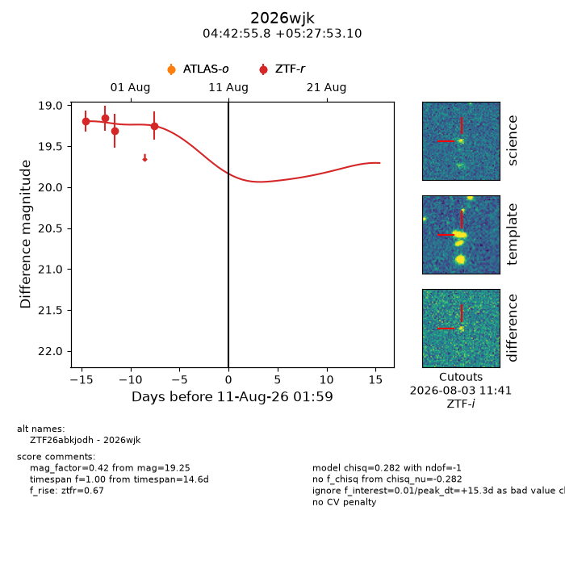
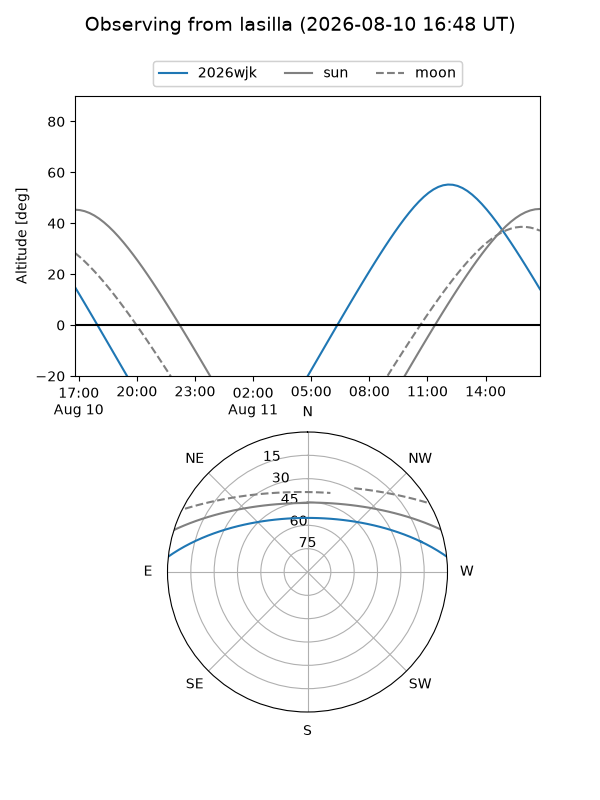
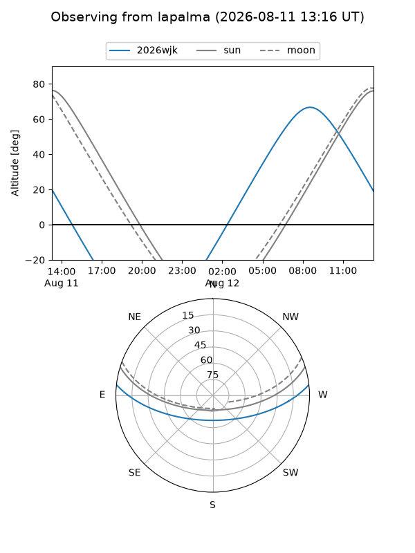
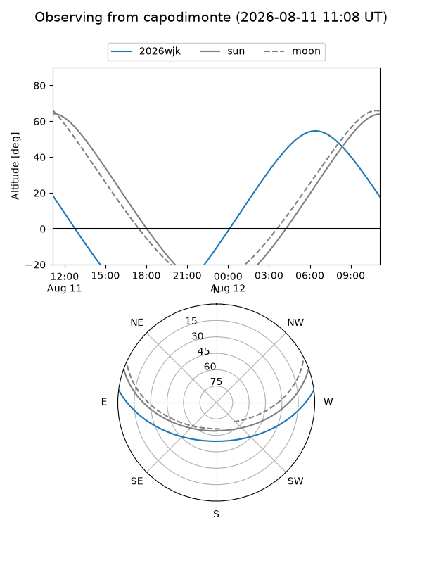
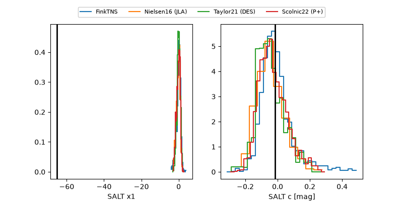

2026wjk
Target 2026wjk at 2026-08-11 13:14
Aliases and brokers:
FINK-ZTF: ztf.fink-portal.org/ZTF26abkjodh
Lasair-ZTF: lasair-ztf.lsst.ac.uk/objects/ZTF26abkjodh
ALeRCE-ZTF: alerce.online/object/ZTF26abkjodh
YSE-PZ: ziggy.ucolick.org/yse/transient_detail/2026wjk
TNS name: wis-tns.org/object/2026wjk
Direct TNS query: direct search
alt names
ZTF26abkjodh (ztf,fink_ztf)
2026wjk (tns,yse)
Coordinates:
equatorial (ra, dec) = 70.7325,+5.46475
equatorial (HMS+DMS) = 04:42:55.79,+05:27:53.10
galactic (l, b) = (191.7816,-25.32282)
Flags:
TNS type: nan
peak dt: +15.8
Photometry:
last ztfr=19.25
4 ztfr detections
Lightcurve

Visibility



Additional plots
